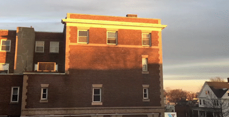
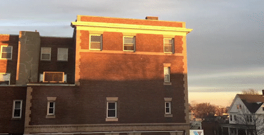

CONTENT
PART A - INTRODUCTION TO POST-PRODUCTION
essential working process in After Effect(AF)Basic
1. interface / import / exporting(rendering)
2. animation in Aftereffect ( basic Motion Graphic )
3. understand of layer and composition in AF
layer, composition of composition...
Editing and effecting
4. Editing and Effecting in AE
cut, duplicate ...
exercise
exercise
5. post-production with RhinoGrasshopper
cut, duplicate ...

6. post-production with RhinoGrasshopper
cut, duplicate ...

6. post-production with RhinoGrasshopper
cut, duplicate ...
7. post-production with RhinoGrasshopper
cut, duplicate ...
PART B - ADVANCED POST-PRODUCTION
general working process for Animation in architectural visualizationBasic
1. Stabilize Motion
transform: position, rotation, and scale
animation with transform (curve editor / trajectory / track bar / frame rate)

animation with transform (curve editor / trajectory / track bar / frame rate)

2. Track Motion
transform: position, rotation, and scale
PART C - USE CASES
general working process of post-production in architectural visualization Case study
1. Camera animation
2. Seasonal animation
3. Time-Lapse animation
daylight simulation with EPW
4. Digital Mockup
composite rendering sequences with movies
APPENDIX
PRE-PRODUCTION
1. schedule
deadline / video run time / rendering style...
Layout ( Mise-en-scene )
2. frame
vertical
horizontal
square
diagonal frame
open frame
closed frame
3. background and foreground
composition
scale
material
4. camera
angles
high angle
low angle
bird’s eye angle
eye angle
oblique angle
Shots
extreme long shot
long shot
full shot
medium shot
close up shot
extreme close-up shot
5. sequence or movement
perception
movement from emotion, contrast, frame, tradition
camera
pan
tilt
dolly shot
zoom short
handheld shots
crane shots or aerial shots
scenes
transition between scenes
6. music and sound
7. Raising questions
Reference
horizontal
square
diagonal frame
open frame
closed frame
scale
material
low angle
bird’s eye angle
eye angle
oblique angle
long shot
full shot
medium shot
close up shot
extreme close-up shot
tilt
dolly shot
zoom short
handheld shots
crane shots or aerial shots